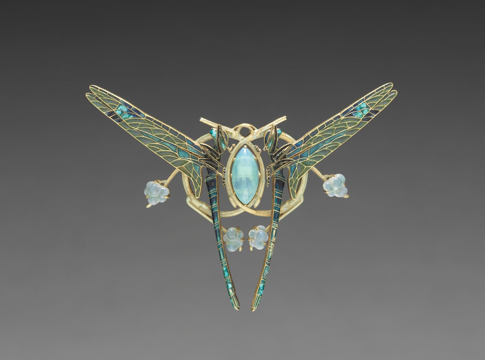

References / Product / 164
Dragonfly brooch by René Lalique
Two enamelled dragonflies, their wings spread, curl around a pale stone in a gold loop, with carved blossoms hanging from their feet.
- Source
- Cleveland Museum of Art: Dragon Fly Brooch, 1964.448
- Creator
- René Lalique
- Made
- c. 1900–1910
- Style
- Art Nouveau (agent-proposed, not yet reviewed by a person)
- Moods
- Delicate, luminous, sensuous
- Evidence
- Downloaded and inspected the Cleveland Museum of Art open-access image of object 1964.448 (3400 × 2525 px print file). Read the object record through the museum’s open-access API.
- Reviewed
- Rights
- Open license, stored. License: CC0-1.0. Rights policy
Context
The Cleveland Museum of Art records the brooch as gold with plique-à-jour and cloisonné enamels, 7.7 × 9.7 cm, French, c. 1900–1910, by René Lalique (1860–1945). CMA 1964.448.
The dragonfly is one of the insect motifs that the style took from Japanese prints (see Art Nouveau, lineage). Lalique later became the leading Art Deco glassmaker; compare his 1928 Victoire mascot.
Observed
- Two dragonflies face each other in mirror image. Their long bodies run down in dark green and blue enamel with small cross bands, and their tails nearly meet at the bottom.
- The four long wings spread diagonally to both sides. Fine gold veins divide each wing into many cells of translucent pale green enamel, with blue and turquoise patches near the body.
- A matte gold loop, drawn as two crossing curves, frames a pointed oval stone of milky blue-green in the centre.
- Three small carved blossoms in pale blue-green hang on short gold stems at the sides and the bottom.
- The museum photograph shows the brooch on a dark gray gradient.
Why it belongs
The piece is symmetrical, but its lines are soft curves and long tapering strokes, not the straight rays of Art Deco.
Plique-à-jour enamel works like stained glass: coloured cells set in thin metal lines. It is the same outlined-cell language as the Tiffany lamp.
Borrow
Divide a large shape into many small cells with thin lines of one colour, and vary the tint from cell to cell.
Frame a central element with two crossing curves instead of a closed rectangle.
Measured
Machine-extracted by tools/image-traits.py on . Full measurement.
- Mean chroma
- 0.01
- Palette
- #676766 24%
- #434343 23%
- #838483 19%
- #535353 13%
- #747474 7%
- #373737 7%
- #9d9873 2%
- #807b5b 2%

